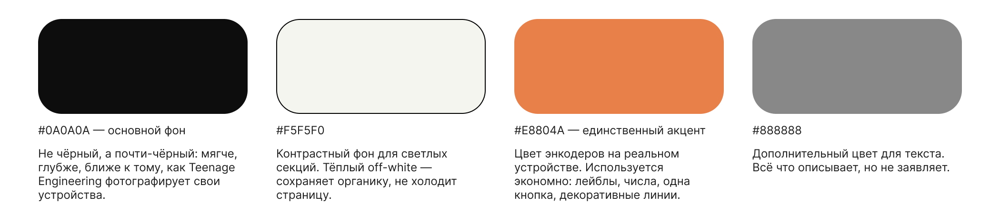
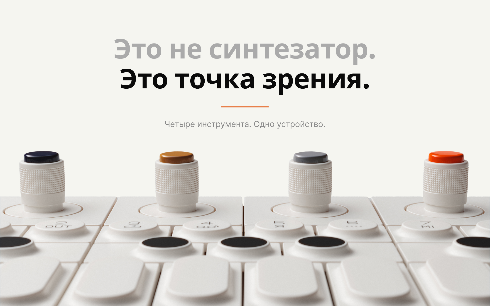
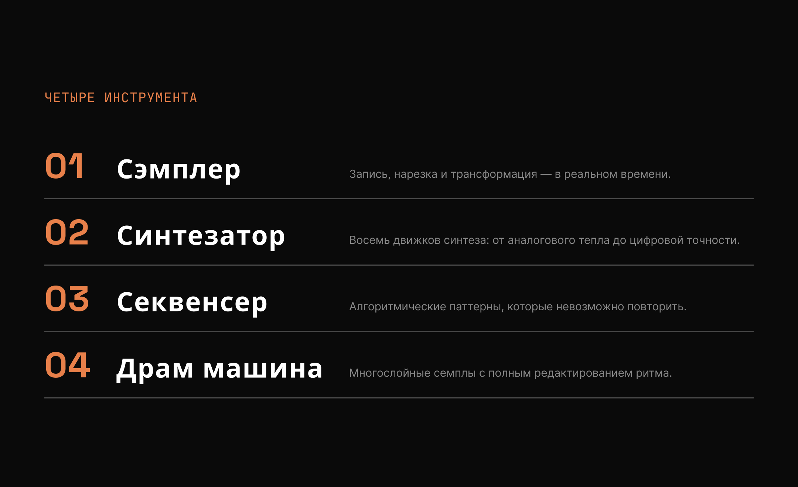
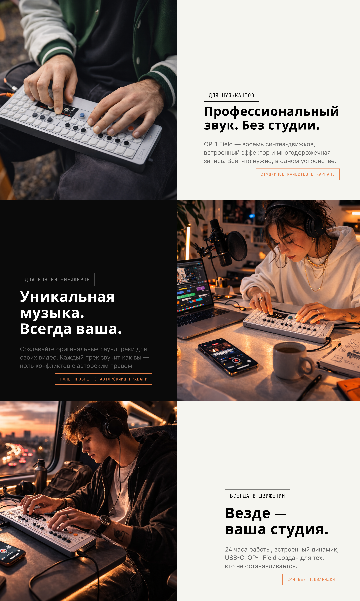
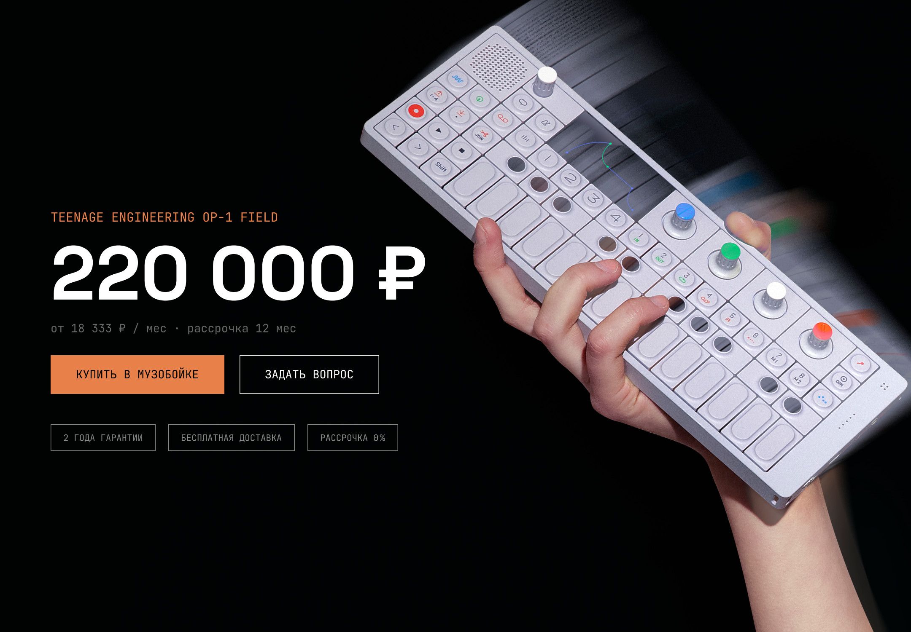

Teenage Engineering OP-1 Field
Промостраница для магазина «Музобойка»
| Задание | — промостраница для магазина «Музобойка» |
| Продукт | — Teenage Engineering OP-1 Field |
| Инструмент | — Figma |
| Итераций | — 4 |
| Школа | — Бюро Горбунова, вторая ступень, 20 поток |
Задание
Промостраница для магазина «Музобойка» в поддержку рекламной кампании у тематических блогеров. Продукт — Teenage Engineering OP-1 Field. Целевая аудитория — музыканты, продюсеры, создатели контента.
Контекст
OP-1 Field — портативный синтезатор от Teenage Engineering. Четыре инструмента в одном устройстве: сэмплер, синтезатор, секвенсер, драм-машина. Цена — 220 000 ₽.
Это не массовый товар. Это объект желания — любимый инструмент Flume, Jon Hopkins, Arca. Задача дизайнера здесь не описать характеристики, а передать ощущение. Человек должен захотеть инструмент до того, как понял, зачем он ему нужен.
Первая версия

Версия времён курса. Страница рассказывает о продукте, но не продаёт его.
Это моя версия страницы, сделанная во время курса. Она решала базовую задачу — рассказать о продукте. Но когда я вернулся к работе после курса, увидел то, чего не замечал тогда.
Нет точки зрения. За страницей не чувствуется дизайнера — только шаблон. Teenage Engineering делает культовые инструменты, страница выглядит как карточка товара в интернет-магазине.
Типографика без системы. Один шрифт, один вес, одна оптика везде. Заголовки отличались от подзаголовков только размером — не ощущением. Нет typographic scale, нет иерархии, нет ритма.
Нет воздуха. Отступы произвольные, белого пространства почти нет. Именно оно создаёт премиум ощущение — дорогие бренды продают через воздух, не через плотность контента.
Не показываю продукт. На странице о физическом инструменте за 220 000 ₽ в главной части нет самого инструмента как объекта. Только лайфстайл-фото в качестве фона — инструмент растворяется в нём.
Процесс

Та же страница, тот же продукт. Год разницы.
Я прошёл через четыре итерации. Каждая решала конкретный слой, а не всё сразу.
Итерация 1 — структура и нарратив. Переосмыслил архитектуру страницы. Убрал дублирующие секции, выстроил логику: эмоция → понимание → технические детали → покупка. Зафиксировал десять секций с чёткой ролью каждой.
Итерация 2 — визуальный язык. Тёмная тема как основа. Единственный акцент — янтарный #E8804A, цвет энкодеров на реальном устройстве. Три шрифта с чёткими ролями: Space Grotesk для заголовков, Inter для body, JetBrains Mono для технических данных и лейблов. Нулевой border-radius везде — острые углы как часть TE-эстетики.
Итерация 3 — типографика и отступы. Зафиксировал typographic scale: семь размеров, строгая иерархия. Отступ между секциями — строго 160px, без исключений. Починил переносы в заголовках, привёл все лейблы к единому регистру.
Итерация 4 — продукт как объект. Главное решение финальной версии. Убрал лайфстайл-фотографию из hero, поставил устройство на тёмном фоне. Продукт появляется на странице трижды — каждый раз в новом контексте. Переход между секциями создаёт ощущение физического присутствия объекта, а не картинки.
Дизайн система

Нет скруглений — острые углы как дизайн-решение, не как забытый параметр. Нет теней — плоскость и свет через цвет, не через эффекты.
Ключевые решения

Cutout устройства без фона. Продукт повёрнут и уходит за границу секции в следующую.
Первая версия: текст поверх лайфстайл-фото. Инструмент растворяется в фотографии, его невозможно рассмотреть.
Финальное решение: тёмный фон, cutout устройства занимает правую половину экрана. Устройство повёрнуто и физически заходит в следующую секцию через overflow. Это создаёт ощущение объекта, а не иллюстрации.
Цену убрал из hero намеренно. Человек должен влюбиться в продукт до того, как увидел стоимость. Так работают Apple и сам Teenage Engineering на своём сайте.
Утверждение — типографический контраст

Два предложения, два цвета. Серое — отрицание, чёрное — утверждение.
«Это не синтезатор.» — серым. «Это точка зрения.» — чёрным. Типографика передаёт структуру мысли без дополнительных средств. Первое предложение подготавливает, второе утверждает. Никакой декорации — только вес и цвет.
Четыре инструмента — система, а не список

Amber число, белое название, серое описание. Трёхколоночная сетка с разделителями 1px.
Этот паттерн повторяется в секции «Почему OP-1 Field» — страница приобретает внутренний ритм. Зритель узнаёт формат и читает быстрее. Два раза один и тот же приём — уже система.
Для кого — чередование фона

Тёмный, светлый, тёмный. Split layout: фото на половину экрана, текст на половину.
Три аудитории — три секции с чередующимся фоном. Ключевое преимущество каждого профиля оформлено как бэйдж в янтарном цвете — якорь для скиммера, который не читает текст блока целиком.
Покупка — финальный момент желания

Третье появление продукта — самое крупное. Цена 220 000 ₽ без извинений.
Если человек дошёл до этой секции, он уже готов. Задача дизайна — не испугать, а подтвердить правильность решения. Устройство справа, цена и CTA слева. Кнопка «Купить» — единственный акцентный элемент в нижней части страницы.
Результат — десктоп
Мобильная версия

375px. Мобильная версия — не сужение десктопа, а отдельные решения для узкого экрана.
Несколько принципиальных решений для мобилки:
Продукт в hero переходит наверх, текст — под ним. Трёхколоночный features-список становится вертикальным стеком:
число и название на одной строке, описание под ними. Разделение в блоке «Для кого» — фото на всю ширину сверху, текст снизу.
Таблица характеристик работает без изменений — она изначально проектировалась под узкий контейнер.
Отступ между секциями уменьшил вдвое: 80px вместо 160px. Типографика пропорционально меньше. Цветовая система, принципы и акцент — идентичны десктопу.
Что сделал бы иначе
Анимации при скролле не проектировал — в реальном проекте это часть работы, а не опция. Плавное появление элементов на секциях и плавный переход акцента при наведении сделали бы страницу живее.
Проектная работа второй ступени Школы дизайнеров Бюро Горбунова, 20 поток.